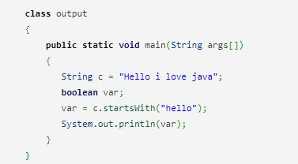
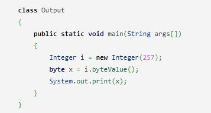

Java Multiple Choice Questions (MCQ)
-
Who invented Java Programming?
a) Guido van Rossum
b) James Gosling
c) Dennis Ritchie
d) Bjarne Stroustrup
ANSWER : (b) James Gosling
-
Which of the following option leads to the portability and security of Java?
a) Bytecode is executed by JVM
b) The applet makes the Java code secure and portable
c) Use of exception handling
d) Dynamic binding between objects
ANSWER : (a) Bytecode is executed by the JVM.
-
Which of the following is not a Java features?
a) Dynamic
b) Architecture Neutral
c) Use of pointers
d) Object-oriented
ANSWER : (c) Use of pointers
-
_____ is used to find and fix bugs in the Java programs.
a) JVM
b) JRE
c) JDK
d) JDB
ANSWER : (d) JDB
-
Which one of the following is not a Java feature?
a) Object-oriented
b) Use of pointers
c) Portable
d) Dynamic and Extensible
ANSWER : (b) Use of pointers
-
Which of these cannot be used for a variable name in Java?
a) identifier & keyword
b) identifier
c) keyword
d) none of the mentioned
ANSWER : (c) keyword
-
What is the extension of java code files?
a) .js
b) .txt
c) .class
d) .java
ANSWER : (d) .java
-
Which environment variable is used to set the java path?
a) MAVEN_Path
b) JavaPATH
c) JAVA
d) JAVA_HOME
ANSWER : (d) JAVA_HOME
-
Which of the following is not an OOPS concept in Java?
a) Polymorphism
b) Inheritance
c) Compilation
d) Encapsulation
ANSWER : (c) Compilation
-
Which of these are selection statements in Java?
a) break
b) continue
c) for()
d) if()
ANSWER : (d) if()
-
What will be the output of the following Java code?

a) 0
b) true
c) 1
d) false
ANSWER : (d) false
-
What will be the output of the following Java code?

a) 257
b) 256
c) 1
d) 0
ANSWER : (c) 1
-
Which of the following is a superclass of every class in Java?
a) ArrayList
b) Abstract class
c) Object class
d) String
ANSWER : (c) Object class